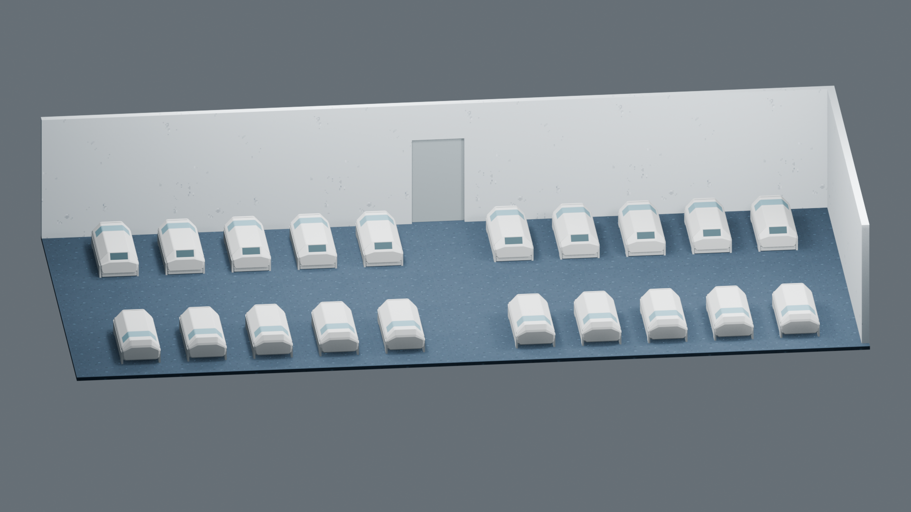
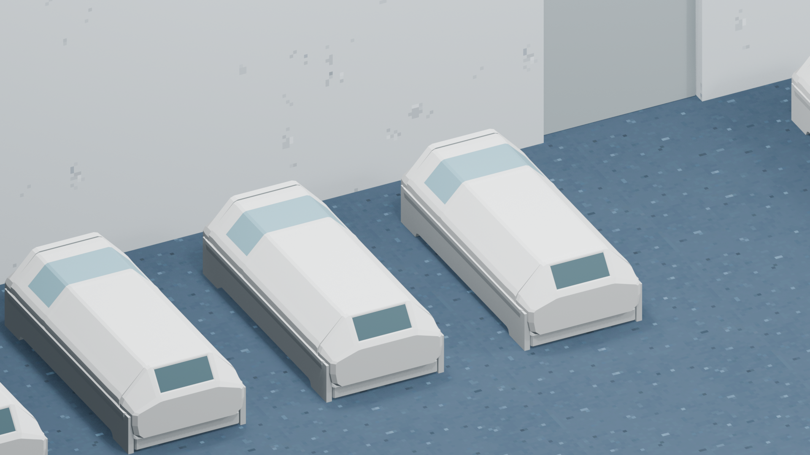
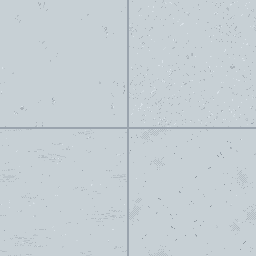
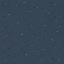
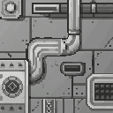
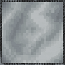
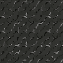

Room 1 · PixelLab 网页贴图试验 v1
墙面采用 Pro 候选，地面采用 Pro Flash 候选。5次生成请求消耗18次免费试用额度。基础材质仍待审查，未形成最终像素美术。

较低候选镜头 · 观察前后遮挡及整体颗粒

材质近景 · 墙面灰斑和地面小亮点仍有重复节奏；舱体尚未贴图
采用的原图

Pro · 原始256×256候选图
每个候选128×128；试贴使用左上内部区域
Pro Flash · 原始64×64
44种RGBA颜色，未严格遵守提示中的4至6色未采用的对照

Pixen 墙面1 · 加入管线与机械板
Pixen 墙面2 · 边框与云状明暗
Pixen 地面1 · 裂纹与斜向高光过强这轮已跑通网页生成与Blender试贴。底图上传受Chrome扩展文件访问权限限制，因此尚未检验对UV与遮罩的精确保留。现有结果能作基础材料候选，下一步仍需舱体色块、明暗、标识与游戏显示验证。
Blender工程 · 观察与限制 · 提示词和参数 · 网页生成截图